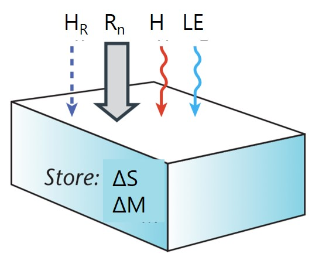

Radiation and heat transfer in water, snow and ice
What makes liquid and water surfaces so different?
CA-DBB station after a significant snowfall event
Today’s learning objectives
Explain what makes snow and water different compared to most other surface-atmosphere interfaces.
Describe the transmission, absorption and reflection of radiation in water and snow.
Describe how we can define the energy budget of a snow-pack or water body.
Snowmelt at Wedgemont Lake, BC
Properties of snow and water surfaces?
Thermal Properties of Water
Figure 1: For a given amount of energy input (J), higher heat capacity means a volume of a substance will warm more slowly; higher thermal admittance means a surface will warm less
Treating Snow and Water as Volume Interfaces
In contrast to opaque land surfaces, land-atmosphere interfaces of liquid and solid water transmit radiation into lower layers.
This means we must know the transmission (and absorption, reflection and emission) of radiation in those media in order to predict energy exchange.
As a consequence, we must treat water, snow and ice ‘surfaces’ as 3D-volume interfaces.
Transmission of short-wave radiation through a glacier (Photo: USGS Webpage)
Beer’s Law
Describes the reduction in flux density of a parallel beam of monochromatic (single wavelength) radiation through a homogeneous medium.
\[
R_z = R_0 e^{-z\mu}
\qquad(1)\]
Assuming that absorptivity (and hence transmissivity) are constant:
Radiative flux density decays exponentially with depth
\(\mu\) is the attenuation coefficient, not thermal admittance
Attenuation Coefficient
The constant of proportionality \(\mu\) is called attenuation coefficient (m-1). It depends on:
Wavelength
Nature of the medium
Impurities (i.e. algae, plankton, chemicals)
Attenuation Coefficient (iClicker)
Which line (A or B) has a higher attenuation coefficient?
Figure 2: Beam attenuation as a function of z and \(\mu\)
Why is water blue?
Not only an overall reduction of the radiative flux density but also a shift in the maximum wavelength towards blue.
\(\mu\) of water depends strongly on wavelength \(\lambda\). Absorption is very high in near infrared (NIR, 0.7 to 3 \(\mu m\)), and lowers in the visible range (0.4 to 0.7 \(\mu m\)).
Attenuation in Water
Figure 3: Beam attenuation as a function of depth in liquid water for selected wavelenghts of visible light
Liquid vs. Solid
The liquid and solid state of water have very similar attenuation coefficients k, except for the region between 1350-1750 nm.
We can use Beer’s law to describe the decay of radiation with depth z in water bodies, snow or ice for different wavelengths.
Exhaust plume from Amundsen-Scott South Pole Station stratifies into the very stable layer (Photo: J. Dana Hrube)
Spectral Transmittance of Ice: Effect of Impurities
Warren et al (2006)
Ice has high transmissivity in the UV-A and blueish visible wavelengths and decreasing transmissivity in the red part of the visible spectrum.
Measuring transmission (Photo: Website U of Washington / Atmos Sci)
How Does this Effect the Surface Energy Balance?
Photo: A. Christen
The Radiation Balance of Snow and Ice: Reflectance
One of the most important characteristics of snow and ice is their high albedo
We can calculate net radiation \(R_n(z)\) for each depth layer.
In snow, long-wave radiation is relatively quickly absorbed, but short-wave radiation is less reduced with depth. Also long-wave emission to the atmosphere is limited to a shallow layer.
During daytime, net radiation \(R_n(z)\) in a certain layer is the sum of short-wave \(SW^*_z\) and long wave \(LW^*_z\) in this layer.
Snow Temperature Profiles
Due to the difference in radiative absorption of the long-wave and the short-wave radiation, daytime net radiation \(R_n\) is greatest just below the surface, creating a subsurface temperature maximum.
If \(R_n\) dominates the melting process, this subsurface layer shows first snow-melting → ‘loose’ or ‘hollow’ character of a melting snow pack.
Beside the 3D framework, also the phase changes of water play an important role in the energy balance of a snow and ice volumes.
Photo: A. Christen
The energy balance of snow and ice
Beside the 3-d framework, also the phase changes of water play an important role in the energy balance of a snow and ice volumes.
Phase changes of water are accounted by a special term in the energy balance, \(\Delta M\), which is the energy flux density put into (or released by) the latent heat of fusion of ice (Lf = 0.334 MJ kg-1 at 0ºC)
TS well below 0ºC. Only solid state of water. No water available for LE or \(\Delta M\).
‘Wet’ snow pack

TS at 0ºC and often isothermal. Both solid and liquid state of water makes LE or \(\Delta M\) important. \(H_r\) is the heat input by rain (i.e. TR > TS)
Energy balance of a melting snow volume
Albedo of a water surface
Albedo of a water surface
Albedo of liquid water strongly depends on the angle at which the direct solar beam hits the water surface.
Specular: beam reflected at same angle (like mirror)
Diffuse: beam diffused isotropically (Lambertian)
Influence of waves on albedo
:::
::::
The radiation balance of an open water surface
The energy balance of an open water surface
Open water surfaces (rivers, lakes, oceans) have the unique feature compared to land surfaces, that turbulent exchange is important on both sides, the atmosphere and the hydrosphere.
Similar to air, turbulent exchange is much more efficient than molecular heat conduction in water.
Further advective energy flux densities (ΔQA) are almost all the time significant.
Beer’s law describes the transmission of radiation through a medium (snow, water) at a given wavelength. attenuation Coefficient \(\mu\) for water is changing from low (VIS, blue) to high (NIR).
Radiation balance of a snow pack volume can cause \(R_n\) maximum below surface, and hence subsurface temperature maximum that causes melting and ‘hollow’ snow pack.
The energy balance for a snow-pack or ice volume needs to consider the latent heat of fusion. Depending on snow/ice temperature we distinguish between dry ‘cold’ and melting ‘warm’ snowpacks.


{kind=link}